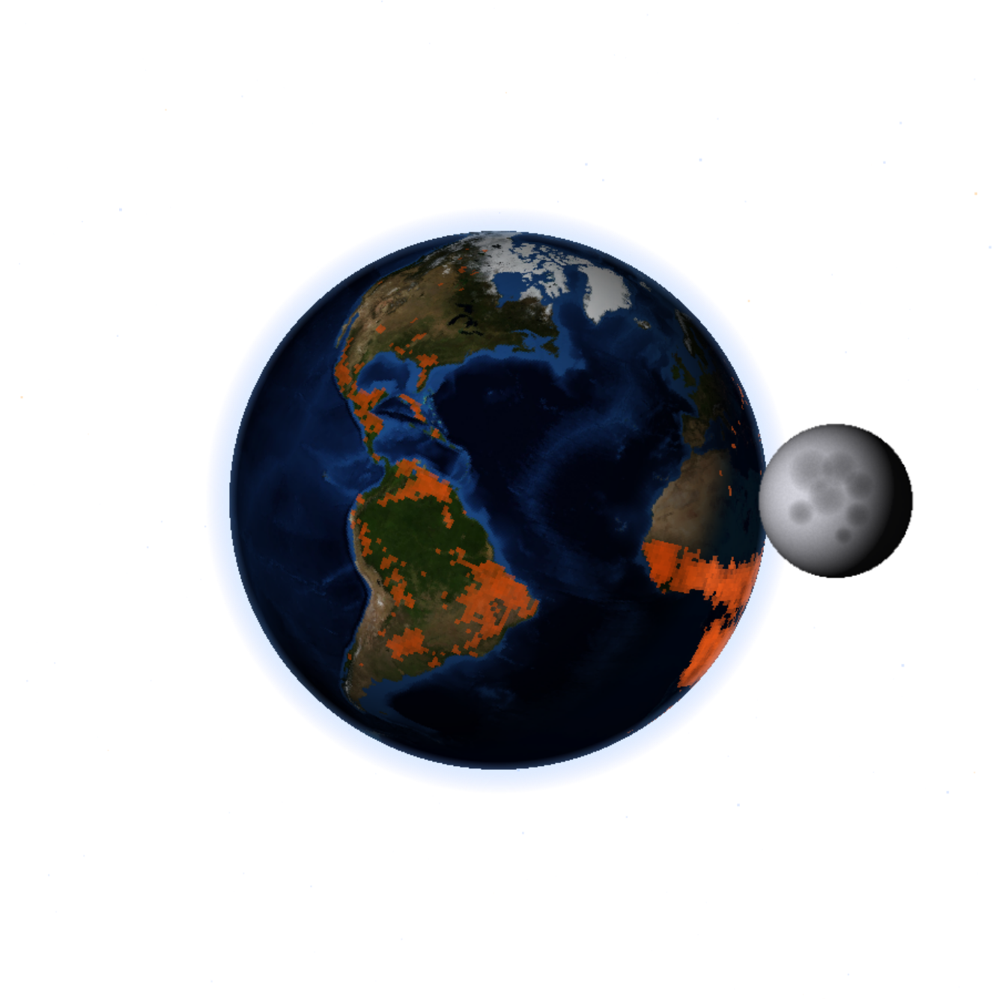

Como um satélite vê o fogo
Ele procura um ponto bem mais quente que os vizinhos.
Cada ponto vira um aviso.
Dois satélites, dois jeitos de enxergar.
MODIS · 1 km: o fogo pequeno escapa
VIIRS · 375 m: pega até fogo pequeno
O olho antigo não vê o fogo pequeno.
O mesmo fogo, anotado 3 vezes.
MODIS, 10:30
VIIRS, 13:30
VIIRS, de novo
1 fogo
Paranã (TO): 26 avisos, 1 fogo.

2025, no mundo
20,5 mi
detecções dos dois satélites
↓
7,26 mi
focos harmonizados
12,4% vistos pelos dois
75,6% só o VIIRS
Brasil: série comparável, 2000–2025
Confere com a área queimada da NASA (r = 0,84)


Do ano até a hora. Toque num fogo.

De Olho no Fogo
Uma visão integrada do fogo
deolhonofogo.estudiocrivy.com.br
NASA Space Apps Challenge 2026 · Time Space Uai